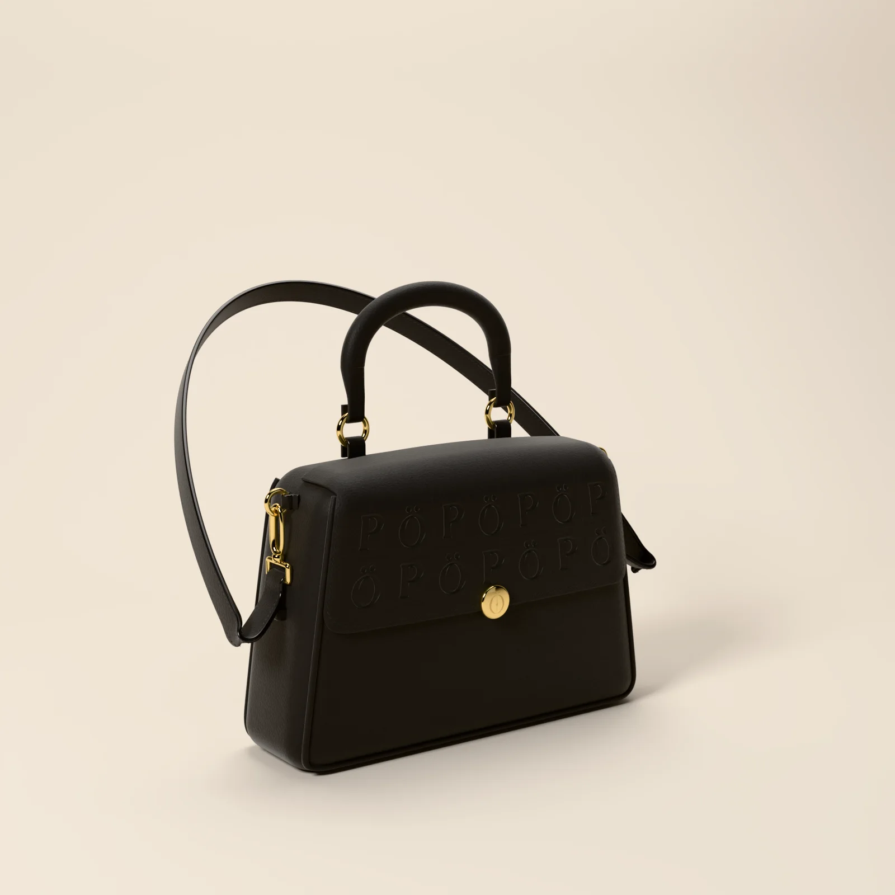
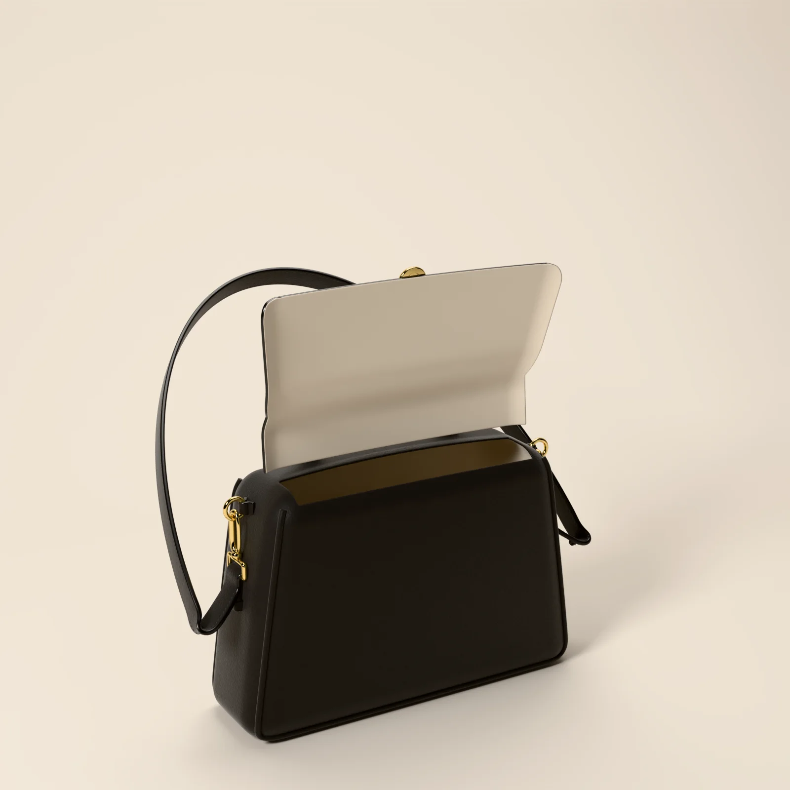

STAND-IN · img/itaoca/front/master.* (departments/apparel/new-pieces-2026-11/build/po-tophandle/site/po_tophandle_front_16k.png; 16K, 15360 × 8640)
STAND-IN · img/itaoca/front/master.* (departments/apparel/new-pieces-2026-11/build/po-tophandle/site/po_tophandle_front_16k.png; 16K, 15360 × 8640)
STAND-IN · img/itaoca/three-quarter/master.* (three-quarter view, 8K; 8K, 7680 × 4320)
STAND-IN · img/itaoca/open/master.* (open view, 8K; 8K, 7680 × 4320)Where it is going
The dressing table
The chair, pulled out.
Chapter I · Bags
Itaoca
Top-handle bag
Scroll to walk around it
Chapter I
Itaoca
Top-handle bag
The bag carried from the car to the door. Structured black calfskin, a rolled handle, the house gold clasp, and cream suede waiting inside.
- LEATHER
- BLACK CALFSKIN
- DIMENSIONS
- 30.6 × 19.8 × 10 CM
- LINING
- CREAM SUEDE
- CLASP
- GOLD, THE Ö ENGRAVED
PRICE ON REQUEST
Keep a seatThe register sees the pre-sale first.
Details
- Pre-sale
- Made to order. We email your delivery date once production is confirmed. Cancel for a full refund any time before production starts.
- Returns
- Exchanges within 14 days of delivery, unused and with tags.
- Care
- Wipe with a soft dry cloth. Keep from rain and heat; if it gets wet, let it dry slowly away from a radiator. Store in its dust bag, stuffed with tissue, out of the light. Leather cleaning by a specialist only. Care
- Size
- The measurements
 STAND-IN · img/itaoca/world/master.* (C8: the last frame, the world plate (the dressing table); 8K, 5760 × 7680)
STAND-IN · img/itaoca/world/master.* (C8: the last frame, the world plate (the dressing table); 8K, 5760 × 7680)Where it is going · C8
The dressing table
The chair, pulled out.
On the screen in the film, the picture is tomorrow: each piece in the place it is going, with one place kept for someone.
The filmClose
The PÖ on the flap
The clasp
The rolled handle
The maker’s notes
Itaoca, the PÖ top-handle
- It begins as black calfskin on a trapezoid: 31 cm at the base, 26.2 cm at the top, 19.8 cm tall.
- One flap runs from a hinge on the top to half the height of the front.
- A panel of 7 by 2 squares is pressed into the flap, 0.55 mm deep, with 8 mm of plain leather round it. The flap alone carries the monogram.
- The handle is rolled, 18 by 16 mm, and rises 11 cm above the top on two 22 mm gold rings.
- It closes on the house disc, 24 mm, the mark engraved 16 mm tall.
Inside it: cream suede, on the body and under the flap.
Read the bookThe packaging
The house lights go down. Black board, cream tissue the colour of the screen, and one gold disc between you and the first scene.
 STAND-IN · img/shared/pack-closed/master.* (packaging/chapter1/renders: closed (the approved final, 3840 px); 8K, 7680 × 4320)
STAND-IN · img/shared/pack-closed/master.* (packaging/chapter1/renders: closed (the approved final, 3840 px); 8K, 7680 × 4320)The closed box, its band and the gold disc
 STAND-IN · img/shared/pack-open/master.* (packaging/chapter1/renders: open (the approved final, 3840 px); 8K, 7680 × 4320)
STAND-IN · img/shared/pack-open/master.* (packaging/chapter1/renders: open (the approved final, 3840 px); 8K, 7680 × 4320)The open box, the piece folded in cream tissue
 STAND-IN · img/shared/pack-disc/master.* (packaging/chapter1/renders: disc (the approved final, 3840 px); 8K, 7680 × 4320)
STAND-IN · img/shared/pack-disc/master.* (packaging/chapter1/renders: disc (the approved final, 3840 px); 8K, 7680 × 4320)The gold disc on the band
 STAND-IN · img/shared/pack-shopping/master.* (packaging/chapter1/renders: shopping (the approved final, 3840 px); 8K, 7680 × 4320)
STAND-IN · img/shared/pack-shopping/master.* (packaging/chapter1/renders: shopping (the approved final, 3840 px); 8K, 7680 × 4320)The shopping bag with cream tissue
 STAND-IN · img/shared/pack-trims/master.* (packaging/chapter1/renders: trims (the approved final, 3840 px); 8K, 7680 × 4320)
STAND-IN · img/shared/pack-trims/master.* (packaging/chapter1/renders: trims (the approved final, 3840 px); 8K, 7680 × 4320)The hang tag, the card and the sealed envelope